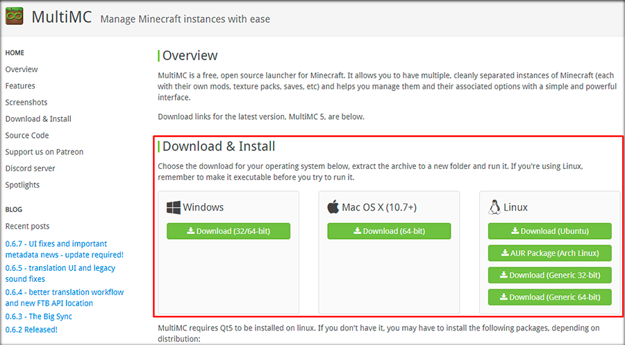
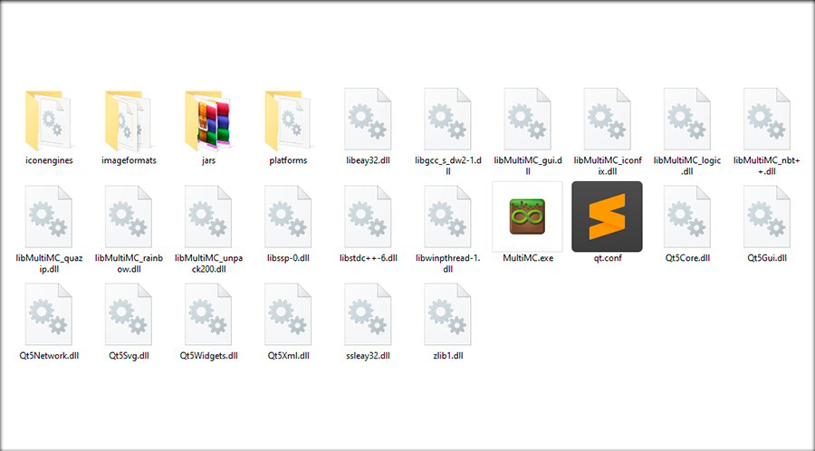
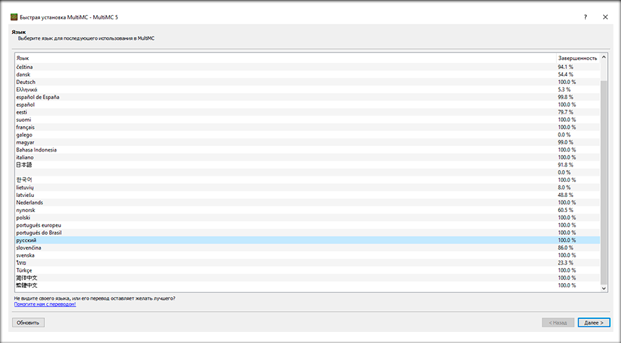
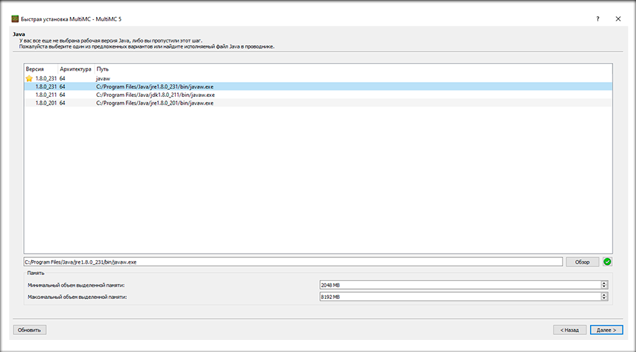
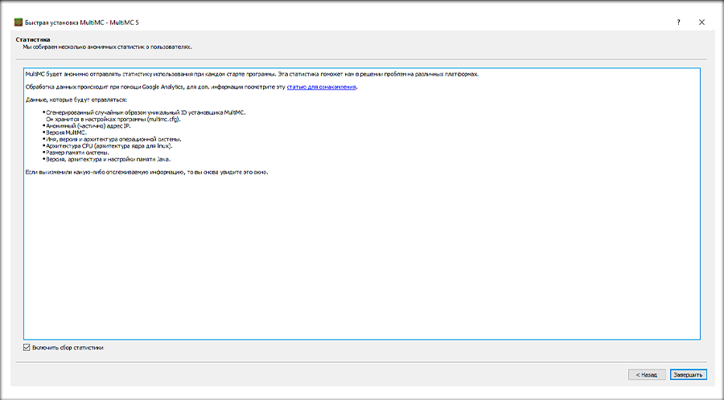
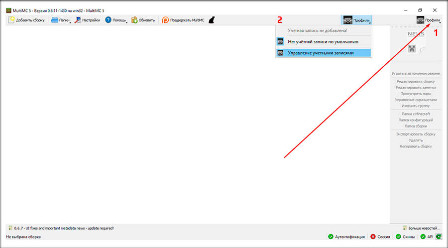
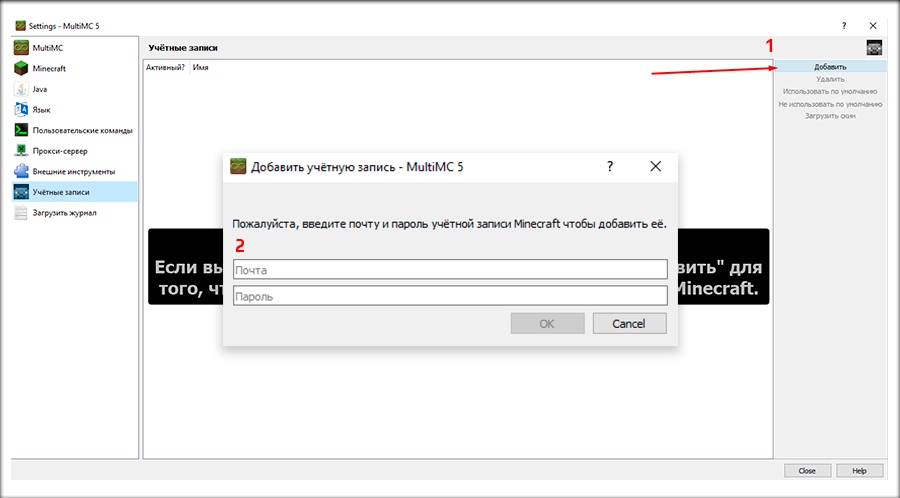
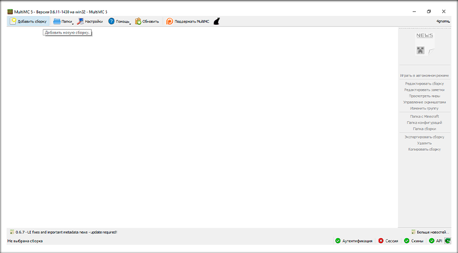
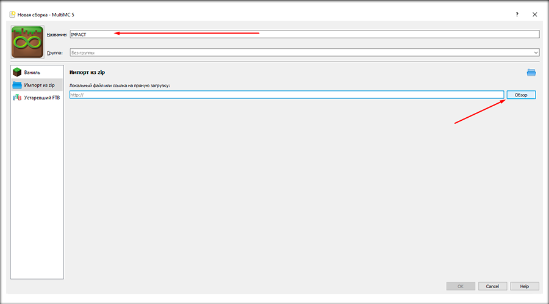
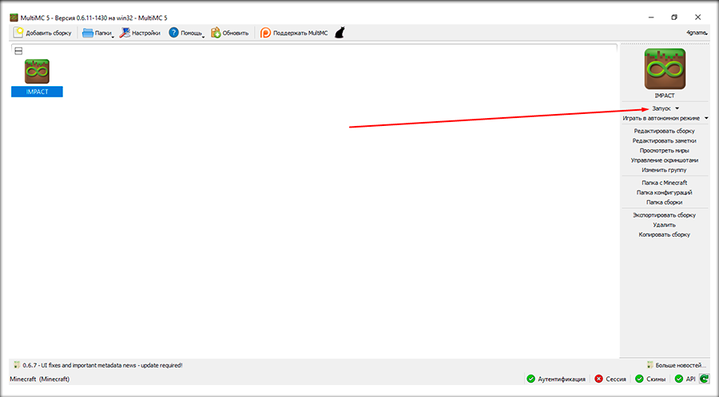

IMPACT 1.0 Release Candidate 2
MODS:
CONFIGS:
SCRIPTS:
Клиент | Сервер
Скачать актуальную версию
Перед скачиванием прочтите список изменений
1. После скачивания клиента, вам нужно скачать MultiMC с офф сайта: multimc.org.
2. В архиве будет папка MultiMC. Ее перенести в нужное вам место и открыть MultiMC.
3. Выберите язык для интерфейса MultiMC и нажмите далее.
4. Выберите нужную версию Java. Задайте количество минимального и максимального объема оперативной памяти (ОЗУ)
5. Установка MultiMC завершена. Нажмите "Завершить" для продолжения
6. Далее вам нужно подключить ваш аккаунт Minecraft. Нажмите на "Профили", далее на "Управление учетными записями"
7. Далее нажмите "Добавить", в открывшемся окне введите свои данные от аккаунта Minecraft и нажмите "ОК"
8. Теперь нужно создать новую сборку, для этого нажмите "Добавить сборку"
9. В открывшемся окне нужно написать название сборки и выбрать "Импорт из zip", далее нажать на обзор и указать путь к скачаному архиву со сборкой. После нажать на "ОК"
10. Готово. Теперь можно запускать для игры, для этого нажмите "Запуск". Приятной игры!
